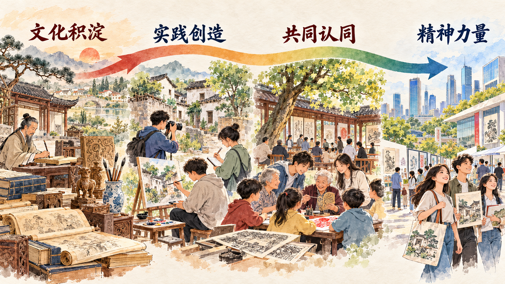

一个民族在长期生活中形成语言、信仰、道德、知识、艺术和生活方式，也在这些共同经验中确认自己从哪里来、重视什么、准备走向哪里。文化由此成为维系共同体、组织社会生活和激励人们创造未来的深层力量。本节从民族复兴、文化自信和文化发展道路三个层次，说明中国特色社会主义文化建设的根基与方向。
一、文化繁荣兴盛是实现中华民族伟大复兴的必然要求
民族复兴包含经济发展、政治进步、社会建设和生态改善，也包含精神世界的丰富、共同理想的巩固和文化创造力的提升。物质生产为社会发展提供基础，文化则把历史经验、价值判断和奋斗目标组织起来，使发展具有稳定的精神支撑。一个社会面对重大变化时，能否形成共同认识、保持创造活力并以自己的方式表达发展道路，同文化力量密切相关。
中国式现代化追求物质文明和精神文明相协调。人民生活水平提高以后，对优质文化产品、公共文化服务和多样精神生活的需求不断增长。文化繁荣既回应人民对美好生活的需要，也使现代化建设获得价值引导、知识资源和创新动力。文化领域形成的新作品、新空间和新职业，还会进入教育、旅游、数字技术和国际交流，产生广泛社会效应。
世界范围的思想文化交流交融交锋更加频繁，文化也成为综合国力竞争的重要方面。文化强国建设提高全民族文化创造活力，使中国道路、中国制度和中国实践能够形成准确、鲜明、具有感染力的表达，增强国家文化软实力和中华文化影响力。
二、坚定中国特色社会主义文化自信
文化自信建立在真实的历史积淀和现实创造之上。中华优秀传统文化积累了关于修身、社会责任、国家治理和人与自然关系的丰富思想资源；革命文化记录中国人民在中国共产党领导下争取民族独立、人民解放的奋斗；社会主义先进文化体现社会主义建设、改革开放和新时代伟大实践中的理想追求与创新创造。三者相互贯通，共同构成中国特色社会主义文化的重要内容。
文化自信还来自当代中国正在发生的实践。乡村振兴、科技创新、城市治理、公共服务和青年创造不断产生新的生活经验与文化表达。传统文化在社区节庆、校园社团、舞台艺术和数字传播中得到接续，革命文化和社会主义先进文化在现实行动中形成新的叙事。文化自信因此体现为对自身文化价值的充分肯定，也体现为面向现代生活继续创造的能力。

参考资料｜文化、文明与文化自信
文化是人类在社会实践中创造的精神成果及其表现形态，进入价值观念、知识系统、审美表达和日常生活。文明是社会发展进步形成的综合成果，物质文明、政治文明、精神文明、社会文明和生态文明相互联系。文化自信是一个国家、一个民族对自身文化价值的充分肯定和对自身文化生命力的坚定信念。
三个概念的层次有所不同。参观一处古建筑，可以观察器物、技艺和审美，也可以追问支撑它的社会组织、生活制度和价值观念；评价一种文化传统，需要说明其中仍有现实价值的内容及其进入现代社会的条件；形成文化自信，则需要把历史资源同现实实践连接起来，在开放交流中保持主体性并发展新的表达。文化自信提供精神上的主动，文化创造使这种主动获得现实内容。
资料来源：统编教材第十章；《中共中央关于党的百年奋斗重大成就和历史经验的决议》有关文化建设内容。
案例研究｜锣鼓声中的青年英歌队
潮汕英歌把舞蹈、戏剧和南拳武术融为一体。表演开始时，锣鼓改变街巷的节奏，队员手持英歌槌进入阵形，在行进中完成击槌、转身、跳跃和队形变化。不同角色有相应装束、脸谱和动作，个人必须听鼓点、看旗号、记位置，才能同整支队伍保持一致。观众看到的是热闹场面，队员经历的却是身体力量、节奏控制、人物理解和集体协作的共同训练。
一名年轻队员加入队伍后，通常先从基本步法和握槌学起。传承人示范动作时，会同时讲解动作的发力、节奏和人物气质。队员把一个短动作反复拆开练习，再进入二人对练和整队排练。快板要求动作密集、气势迅疾；中板和慢板强调队形、呼吸与节奏变化。一次完整巡游还要适应街道宽度、人群距离和长时间行进，训练由动作学习进入公共场景中的共同配合。
潮阳英歌和普宁英歌于 2006 年列入第一批国家级非物质文化遗产名录。名录确认了文化价值，传承仍然发生在一次次教学、排练和节庆展演中。年轻人进入队伍以后，开始认识家乡历史、人物叙事和社区礼俗；家长、传承人、村社组织者和表演者共同安排训练场地、服装器材与演出秩序。文化传统由此通过可参与的社会生活进入新一代的经验。
青年队员也给英歌带来新的传播方式。他们用短视频记录训练细节，介绍脸谱、服饰和阵形，把一段完整表演拆解为便于理解的动作与故事。屏幕传播扩大了观众范围，线下排练仍然保存技艺传授、纪律要求和共同体关系。文化自信在这里表现为对地方文化价值的认同，也表现为年轻人愿意投入时间、掌握技艺并形成当代表达。
讨论题
- 年轻队员掌握一套英歌动作时，除了动作准确，还需要理解哪些共同体记忆和行为规范？
- 短视频传播能够为英歌传承增加哪些资源，线下训练仍然承担哪些不可替代的任务？
- 如果中山大学组建英歌学习社团，课程需要怎样安排技艺、历史和公共展演？
资料来源：国务院《关于公布第一批国家级非物质文化遗产名录的通知》；文化和旅游部国家艺术基金《舞剧〈英歌〉在深圳首演》，2025 年 2 月 28 日；文化和旅游部《汕头潮阳英歌舞出海展现中华文化独特魅力》，2025 年 2 月 13 日。
三、坚持中国特色社会主义文化发展道路
中国特色社会主义文化发展道路明确文化建设的根本方向。文化建设坚持为人民服务、为社会主义服务，坚持百花齐放、百家争鸣，坚持创造性转化、创新性发展，在满足人民精神文化需求的过程中增强人民精神力量。举旗帜、聚民心、育新人、兴文化、展形象，分别指向方向引领、社会凝聚、人才培养、文化创造和国际传播，构成相互联系的任务体系。
坚持正确道路并不排斥文化形式和艺术风格的丰富多样。共同方向为文化创造提供价值坐标，人民生活为文化创新提供题材和检验标准，艺术规律与技术进步拓展表达空间。文化工作者、教育者、公共机构、市场主体和普通参与者在各自位置上共同形成文化供给，使社会效益和经济效益在文化发展中相统一。